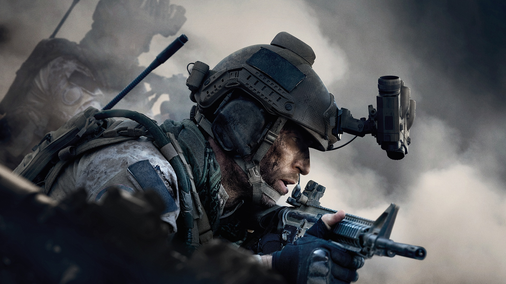

<!--  -->

<body>

  <mat-sidenav-container>
      <mat-sidenav mode=side align="start" opened fixedInViewport="true" class="sidenav">
        <mat-nav-list class="nav-list">
          <a mat-list-item routerLink=''>
            <i class="material-icons option">
                list
            </i>
          </a>
          <a class="item prim" mat-list-item routerLink=''>
              <i class="material-icons">
                  home
              </i>
              <span>Init</span>
          </a>
          <a class="item" mat-list-item routerLink=''>
            <i class="material-icons">
                map
            </i>
            <span>Maps</span>
          </a>
          <a class="item" mat-list-item routerLink=''>
            <i class="material-icons">
                book
            </i>
            <span>History</span>
          </a>
          <a class="item" mat-list-item routerLink=''>
            <i class="fas fa-biohazard"></i>
            <span>History</span>
          </a>

        </mat-nav-list>
      </mat-sidenav>
      <!-- Body -->

  </mat-sidenav-container>


</body>
